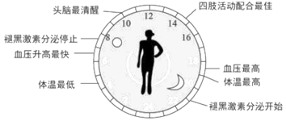

2018年北京市中考生物试题 · 科普阅读 第20题
20. 阅读科普短文，回答问题。
猫头鹰昼伏夜出，大雁秋去春来，植物春华秋实……你可曾想过，他们是如何感知自然并顺时而为的？
中国古代医学典籍《黄帝内经》中早有“人与天地相参也，与日月相应也”的阐述。由于地球的自转和公转，导致光照、温度等环境因素均呈现出昼夜和季节性周期变化，生物体适应这种周期性变化，形成了生物节律。如人的体温周期波动、果蝇的羽化(从到成虫)均表现为昼夜节律，鸟类的迁徙表现为年节律。
生物体内调拉生物节律的机制称为生物钟。从简单的细菌到植物、动物都有生物钟。人们很早就观察到含羞草的叶片白天张开、夜晚合拢的现象。当把含羞草放到一个黑暗的环境中时，发现含羞草叶片开合仍会维持原来的昼夜节律。后来，科学家通过对果绳羽化节律的研究，分离得到第一个生物钟基因——per基因，这项成果获得了2017年诺贝尔生理学或医学奖。
对于人体来说，生长激素的分泌高峰一天通常只出现一次，大约在夜晚入睡一小时后，且早睡觉比晚睡觉的峰值高很多。晚上不睡，白天补觉则无济于事，因为白天睡觉不会引起生长激素分泌量的增加。可见，生物钟如钟表一般，可以精确地调控行为、激素水平、睡眼、体温等生理机能。

生物钟是自然选择的结果，赋予了生物预见和应对自然环境变化的能力，有利于生物的生存和繁衍。了解和顺应大自然赋予我们的生物钟，将使我们的生活更加健康。
(1)通过对含羞草叶片开合的研究，人们认识到含羞草叶片开合_______(填“有”或无”)内在生物节律。果蝇羽化节律的研究表明，生物节律是由____________控制的。
(2)据图可知，18：00-19：00是人体的____________和体温最高的时间。
(3)根据文中信息分析，下列属于年节律的是________________。
a.人体体温变化 b.人体褪黑激素的分泌c.北极黄鼠冬眠d.猫头鹰昼伏夜出
(4)青春期是青少年身体生长发育 黄金时期，由__________分泌的生长激素能促进骨骼和肌肉的生长发育。因此，遵循昼夜节律对维持生长激素的正常分泌至关重要。
黄金时期，由__________分泌的生长激素能促进骨骼和肌肉的生长发育。因此，遵循昼夜节律对维持生长激素的正常分泌至关重要。
(5)健康生活需要良好的生活习惯。结合对生物钟的理解，请你写出一条健康生活的建议：_________________。